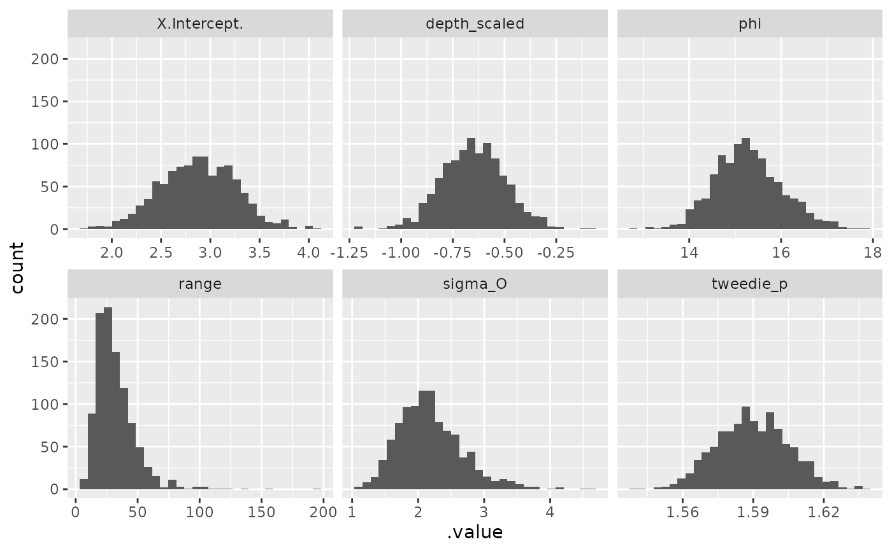

Extract parameter simulations from the joint precision matrix
Source:R/gather-spread.R
gather_sims.Rdspread_sims() returns a wide-format data frame. gather_sims() returns a
long-format data frame. The format matches the format in the tidybayes
spread_draws() and gather_draws() functions.
Usage
spread_sims(object, nsim = 200, n_sims = deprecated())
gather_sims(object, nsim = 200, n_sims = deprecated())Arguments
- object
Output from
sdmTMB().- nsim
The number of simulation draws.
- n_sims
Deprecated: please use
nsim.
Value
A data frame. gather_sims() returns a long-format data frame:
.iteration: the sample ID.variable: the parameter name.value: the parameter sample value
spread_sims() returns a wide-format data frame:
.iteration: the sample IDcolumns for each parameter with a sample per row
Examples
m <- sdmTMB(density ~ depth_scaled,
data = pcod_2011, mesh = pcod_mesh_2011, family = tweedie())
head(spread_sims(m, nsim = 10))
#> .iteration X.Intercept. depth_scaled range phi tweedie_p sigma_O
#> 1 1 2.856128 -0.6229333 42.88002 14.95677 1.579262 2.544347
#> 2 2 2.866894 -0.6765082 6.73540 15.72147 1.583924 3.423992
#> 3 3 3.293484 -0.6572321 32.55938 16.06639 1.606307 2.435945
#> 4 4 2.689842 -0.7701053 53.15092 16.51530 1.599083 2.175908
#> 5 5 1.996659 -0.5219329 23.59325 14.19778 1.588456 3.123619
#> 6 6 3.256685 -0.7100302 18.60005 15.17394 1.589147 2.493362
head(gather_sims(m, nsim = 10))
#> .iteration .variable .value
#> 1 1 X.Intercept. 2.661299
#> 2 2 X.Intercept. 2.633285
#> 3 3 X.Intercept. 3.060314
#> 4 4 X.Intercept. 2.887561
#> 5 5 X.Intercept. 3.010557
#> 6 6 X.Intercept. 2.794004
samps <- gather_sims(m, nsim = 1000)
if (require("ggplot2", quietly = TRUE)) {
ggplot(samps, aes(.value)) + geom_histogram() +
facet_wrap(~.variable, scales = "free_x")
}
#> `stat_bin()` using `bins = 30`. Pick better value with `binwidth`.
